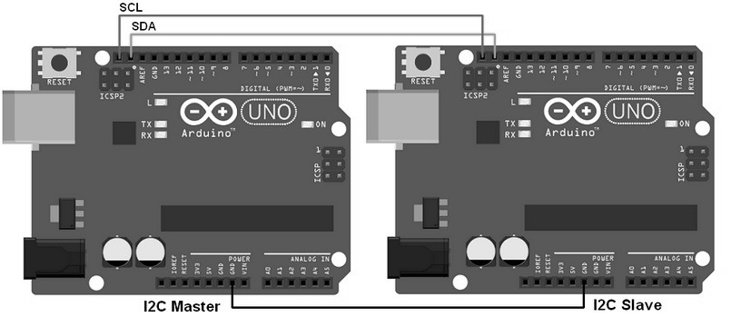

/network_&_communications
(03_may_2022)
For this week of networking and communication, we had a brief introduction on two main topics: on
the one hand, how networks are created, which structure they have, and which methods of networking
exist nowadays. On the other hand, how devices communicate with each other, in wired and wireless
ways, and the different protocols to communicate with sensors (SPI, UART, I2C, Wi-Fi, Bluetooth...),
boards and other electronic devices.

From my point of view, the most exciting topic of this session was the communication between devices,
since I'm now getting started on the environmental sensing topic, and I'm figuring out the kind of
things that can be done with a controller connected to a sensor. Of course, knowing how to make two
controllers like ESP32 or ESP8266 communicate will be a major improvement in my field of research.
It will give me the change of, for instance, playing with the concept of environmental sensing and
wearables from distance.
.communicating_two_controllers
The task this time consisted of sending a message between two microcontrollers. In my case, I teamed up with Paula and we used two ESP8266 and programmed them to get an input with a sensor from one controller and then send it to the other one to activate an output device. To do so, we followed a tutorial since we had no knowledge at all of how to do it with an ESP8266. You can find the tutorial here.
To communicate between each other, we had to use a protocol called Wifi-UPD, where you create a code where one of the ESP8266 boards is used a server and the other one used as a client. With the server you create an IP that will be used by the client to connect and then send the packages. The code also has a buffer to retain the packages sent from the client to the server. Finally, as you can see in this video below, this is how both devices communicated. When we send inputs from the sensor (button) automatically the output activates (buzzer and LED):
Of course, the thing that we built is really basic and doesn't have much function, but using this protocol we can play with different sensors and get outputs remotely that could be transformed into Processing. The same code can be used in many other applications just by changing the void loop.